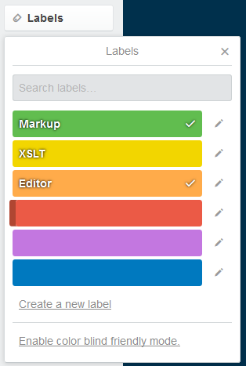

Collaborating on the board
Parent topic
:
Collaborating on the board
Setting labels
A set of ten colored labels is available for each board and you can give them relevant names.
Open the card.
Click
Labels
and click one or more labels that you want to add to the card.

Thin colored lines are added to the card in the list.